A collection of charts, dashboards, practical assignments,
and data visualization work.
Kanak
•
BCA VII Semester
Lab Assignments
Explore my Data Visualization lab work, dashboards, charts, and practical assignments.
LAB 01
Data Visualization – Create Graphs and Charts
Data Visualization
LAB 02
Visualize Your World
Class Activity
LAB 03
Visualize It! – Create & Share Your Data Visualization Cheat Sheet
Data Visualization Cheat Sheet
LAB 04
From Learning to LinkedIn: Explore the Power of Data Visualization
LinkedIn Activity
LAB 05
Learning Activity: Data Visualization
Notes & Concepts
LAB 06
Understanding Audience and Context
Lab Practical
LAB 07
Hands-On Lab Practical – Excel Charts & Dashboard
Excel Dashboard
LAB 08
Submit Your Data Studio Report
Data Studio
LAB 09
Lab Work: Tableau Dashboard
Tableau
LAB 10
Hands-On Practical – Tableau
Tableau Practical
LAB 11
Lab Work – Tableau Dashboard
Tableau Dashboard
Lab Assignment 01
Data Visualization – Create Graphs and Charts
Assignment
Create graphs and charts using the given dataset and
identify important insights from the data.
Visualization 1
Chart Title:
Sum of Aspirants Affected by Exam Name
Chart Type:
Clustered Column Chart
Police Constable had the highest number of aspirants affected,
followed by NEET UG and Engineering Entrance.
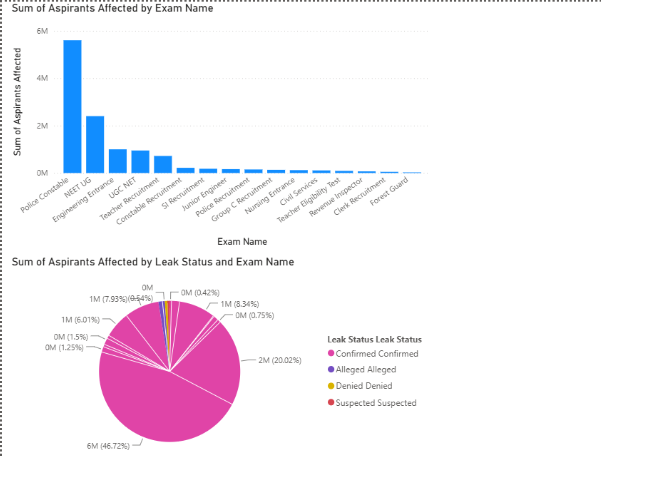
Visualization 2
Chart Type:
Pie Chart
The chart shows the distribution of paper leak cases
based on their leak status.
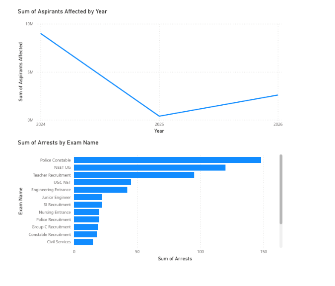
Tool Used
Excel
```
Lab Assignment 02
Visualize Your World
Assignment
Create visualizations based on daily routine and energy-level data
to understand how different activities and time periods can be
represented visually.
Chart I – Daily Routine Chart
The Daily Routine Chart represents how time is distributed among
different activities during the day.
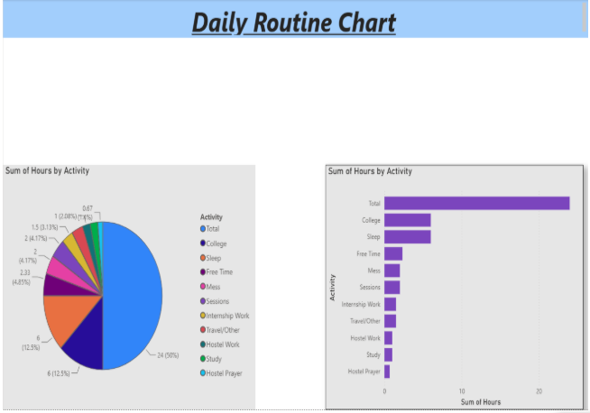
Chart II – Day Energy Chart
The Day Energy Chart shows the variation in energy levels
throughout the day.
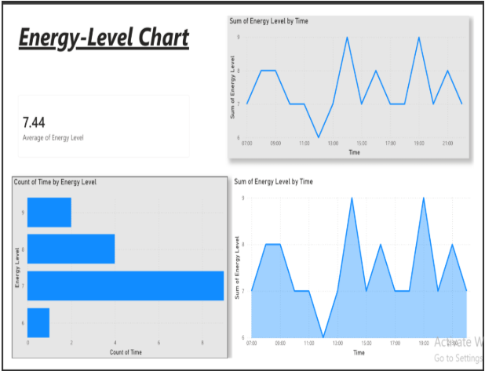
Dashboard
The dashboard brings the visualizations together to provide
an overall view of the daily routine and energy levels.
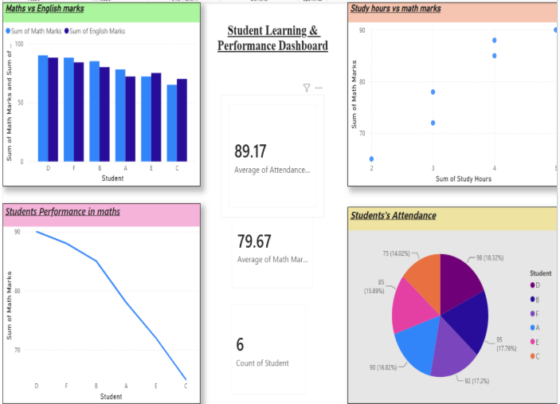
Lab Assignment 03
Visualize It! – Create & Share Your Data Visualization Cheat Sheet
Assignment
Create and share a data visualization cheat sheet that explains
different charts, graphs, maps, and their suitable uses.
What I Learned
Data visualization is not just about making data look attractive.
It helps make important information easier to see, understand,
and communicate.
The cheat sheet covers common charts, graphs, maps, and
visualization tools, along with the situations in which they
are useful.
My Experience with Power BI
I explored Power BI through practical activities using the
paper leak dataset, daily routine data, and energy-level data.
This helped me understand that different types of data require
different types of visualizations.
Key Learning
Data becomes more meaningful when it is presented in the right
way. Sometimes the data is already telling the story; we just
need to present it in a way that allows us to see it.
Visualization Cheat Sheet
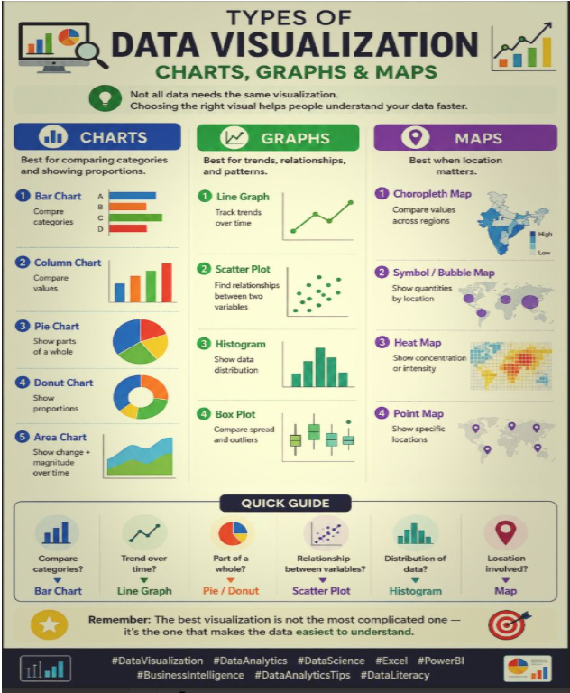
Lab Assignment 04
From Learning to LinkedIn: Explore the Power of Data Visualization
Article Title
Let the Data Speak: A Beginner's Guide to Visualization Tools
Introduction
Data visualization is the process of presenting information through
charts, graphs, maps, and dashboards. It makes data easier to
understand and helps people identify patterns, trends, and unusual
values.
Common Types of Visualizations
Bar charts are useful for comparing values, while line charts are
useful for showing trends over time. Pie charts show parts of a
whole, histograms show distributions, and scatter plots help identify
relationships between variables.
Other useful visualizations include heat maps, Gantt charts,
treemaps, and different types of maps.
Choosing the Right Chart
The choice of chart depends on what we want to communicate. A clear
title, proper labels, suitable scale, appropriate colors, simple
design, and the right chart type make a visualization more effective.
Charts, Graphs and Maps
Charts and graphs help present and analyze data in different ways.
Maps are especially useful when the data has a geographical
component. Choropleth maps, bubble or symbol maps, and point maps
can be used to represent location-based information.
Visualization Tools
Some commonly used data visualization tools are Excel, Power BI,
Tableau, and Python libraries such as Matplotlib and Seaborn.
My Learning Experience
I explored Power BI through practical activities using a paper leak
dataset, daily routine data, and an energy-level dataset. These
activities helped me understand how different visuals can be used
for different types of data.
Key Learning
Data visualization is a process of trial, exploration, and
understanding. Choosing the right visual can make raw numbers much
easier to understand and communicate.
Lab Assignment 05
Learning Activity: Data Visualization
Q1. Definition and Importance of Data Visualization
Data visualization is the process of presenting data visually using
charts, graphs, maps, and dashboards. It makes complex information
easier to understand and helps identify trends, patterns, and
comparisons.
It supports faster decision-making, improves communication with
non-technical audiences, and helps present information effectively.
Advantages
Data visualization makes information easier to understand, helps
identify patterns, supports decision-making, makes data easier to
share, improves communication, and saves time.
Disadvantages
Poorly designed visualizations can be misleading or misinterpreted.
Too much information can make a visualization confusing. Data
quality is also important, and creating effective visualizations
requires appropriate skills.
Q2. Difference Between Chart and Graph
A chart is a visual representation used to present or explain data.
A graph is a type of chart that commonly uses data points and
mathematical relationships to show trends or relationships.
Charts can include pie charts, bar charts, maps, and diagrams,
while graphs often use X and Y axes for numerical analysis.
Every graph can be considered a chart, but not every chart is
necessarily a graph.
Q3. Types of Data Visualization
General types include charts, tables, graphs, geospatial
visualizations, infographics, and dashboards.
Specific examples include bar charts, line charts, pie charts,
histograms, heat maps, Gantt charts, box-and-whisker plots,
bullet charts, treemaps, area maps, and highlight tables.
Q4. Purpose and Use of Different Visualizations
Bar charts are useful for comparing values, line charts for showing
trends over time, and pie charts for showing parts of a whole.
Histograms show distributions, while scatter plots show relationships
between variables.
Area charts can show changes over time, heat maps can highlight
high and low values using color, and maps can represent
location-based data. Gantt charts are useful for project timelines,
treemaps compare parts of a whole by size, dashboards provide
multiple insights, and tables show exact values.
Q5. Examples
Charts: Bar, Pie, Histogram, Area, Treemap
Graphs: Line, Scatter, Bar, Box Plot
Maps: Choropleth, Heat Map, Bubble/Symbol Map,
Point Map
Lab Assignment 06
Understanding Audience and Context
Problem 1 – College Placement Review
The Placement Cell has department-wise placement percentages
for the last three years. The College Director needs to present
this information to the Governing Board to help review placement
performance and decide whether evening remedial coaching should
continue.
The purpose is to compare placement percentages across departments
and years and provide information for deciding whether remedial
coaching should continue.
The chart compares placement percentages of the five departments
across three years. CSE recorded the highest placement percentage
in 2025 at 88%, while Civil recorded the lowest at 65%.
CSE, ECE, and MBA showed clear improvement during the period.
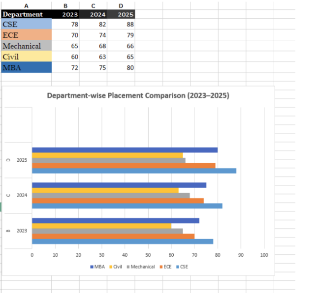
Problem 2 – Study Habits Investigation
The Data Analytics team is investigating whether weekly study hours
are related to attendance and exam performance. The findings can
help in designing targeted interventions for students.
Audience and Context
Audience: Data Analytics Team (Technical)
Students: S1–S10
Source: Provided Study Habits Dataset
Purpose
The purpose is to identify relationships between study hours,
attendance, and exam marks.
Visualization 1 – Weekly Study Hours and Exam Marks
Chart Type: Clustered Column Chart
Chart Title: Weekly Study Hours and Exam Marks
of Students
The chart compares weekly study hours and exam marks for ten
students. Students with higher study hours generally achieved
higher marks. For example, S5 studied for 15 hours and scored 91,
while S8 studied for 2 hours and scored 40.
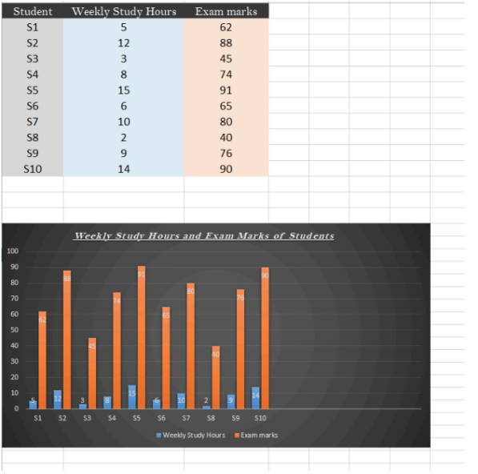
Visualization 2 – Relationship Between Study Hours and Exam Marks
Chart Type: Scatter Chart with Linear Trendline
Chart Title: Relationship Between Weekly Study
Hours and Exam Marks
The scatter chart shows a positive relationship between weekly
study hours and exam marks. The upward trendline indicates that
students who study more hours generally tend to achieve higher
exam marks.
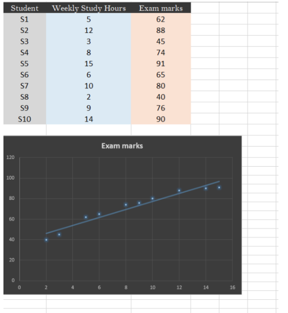
Lab Assignment 07
Hands On Lab Practical - Excel Charts & Dashboard
Dashboard
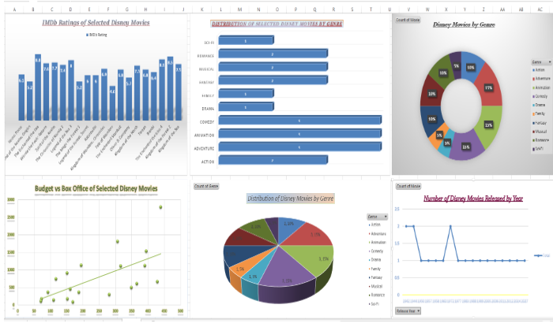
Lab Assignment 08
Submit Your Data Studio Report
Report
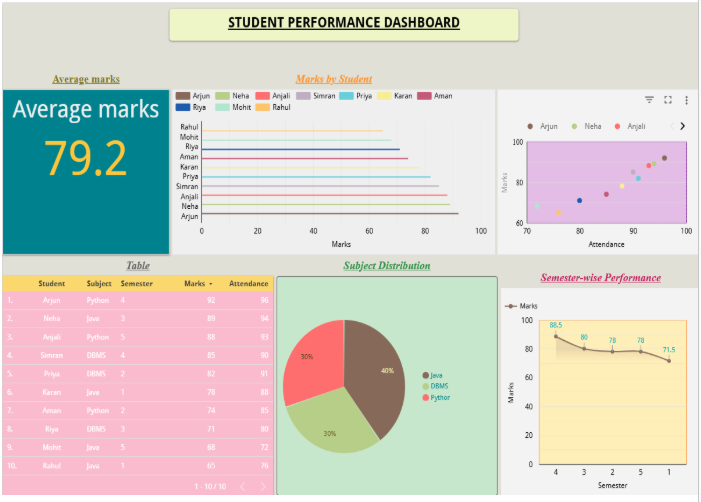
Lab Assignment 09
Lab Work: Tableau Dashboard
Dashboard
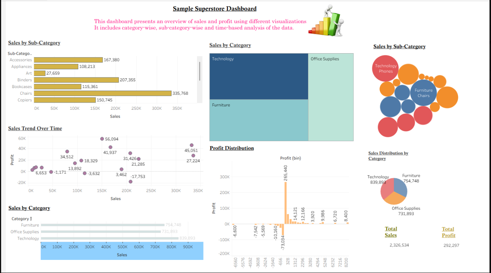
Lab Assignment 10
Hands-On Practical - Tableau
Dashboard
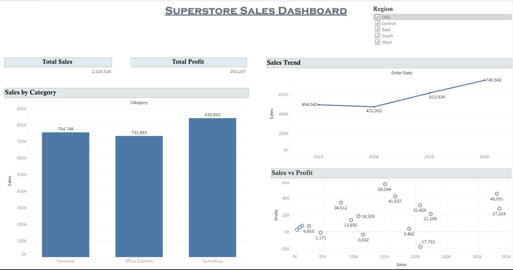
Lab Assignment 11
Lab Work: Tableau Dashboard
Date: 01.10.2026
Task: Explore the Sample Superstore Dataset and create
3 dashboards for at least 3 different audiences.
I. Sales Manager Dashboard
Dimensions:
Category, Sub-Category, Segment, Region, Order Date, Order ID
Measures:
Sales, Profit
Why was this dashboard created?
This dashboard was created to get a quick view of overall sales
performance and understand how sales are distributed.
Who is the audience?
The main audience is a Sales Manager, who needs to monitor sales
and compare different categories, sub-categories and customer segments.
Context:
The dashboard uses the Sample Superstore dataset to show sales
performance through different charts and KPI cards. It helps the
manager view the important information in one place.
What does the dashboard show?
Total Sales and Total Profit using KPI Cards
Sales by Category using a Bar Chart
Sales by Sub-Category using a Bar Chart
Sales by Segment using a Bar Chart
Sales Trend Over Time using a Line Chart
Region Filter for viewing sales data by region
Key Insights:
The dashboard makes it easier to see which categories, sub-categories
and customer segments have higher sales. The sales trend also helps
in understanding how sales change over time.
Order ID:
Order ID was used with Count (Distinct) to calculate the number of
orders where required.
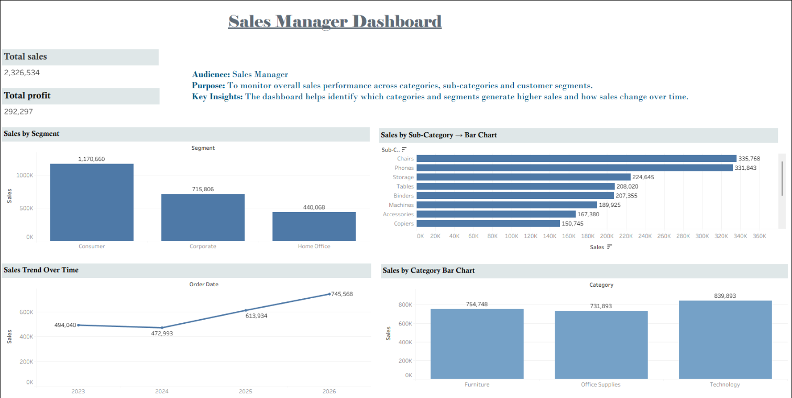
II. Regional Performance Dashboard
Dimensions:
Region, State, Order Date, Order ID
Measures:
Sales, Profit
Who is the audience?
The main audience for this dashboard is a Regional Manager, who
needs to compare the performance of different regions and states.
Why was this dashboard created?
This dashboard was created to get a clear view of sales and profit
across different regions. It helps the manager compare regions,
check state-wise sales, and understand how sales change over time.
Context:
The dashboard uses the Sample Superstore dataset to compare sales
and profit across different regions and states. It also shows
regional trends and the relationship between sales and profit.
What does the dashboard show?
Total Sales — KPI Card
Total Profit — KPI Card
Total Orders — KPI Card
Average Profit — KPI Card
Sales by Region — Bar Chart
Profit by Region — Bar Chart
Sales by State — Filled Map
Sales Trend by Region — Line Chart
Sales vs Profit by Region — Scatter Plot
Region Filter
Key Insights:
The dashboard makes it easier to compare regional performance and
identify areas with higher or lower sales and profit.
Order ID:
Order ID was used with Count (Distinct) to calculate Total Orders.
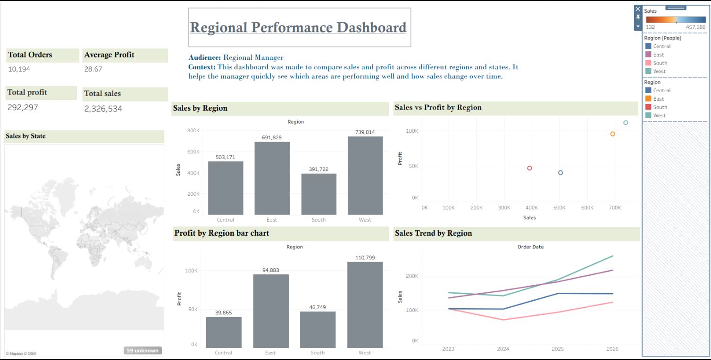
III. Product Performance Dashboard
Dimensions:
Category, Sub-Category, Segment, Product Name, Order Date
Measures:
Sales, Profit, Quantity, Discount
Audience:
The dashboard is made for a Product Manager who wants to check
product sales, profit, quantity and discounts.
Why was this dashboard created?
The main purpose of this dashboard is to get a clear idea of
product performance and understand which categories and
sub-categories are performing better.
Context:
The dashboard was created using the Sample Superstore dataset to
understand how different products, categories and sub-categories
are performing.
How I Created It:
I created different worksheets in Tableau and used fields like
Sales, Profit, Quantity, Discount, Category and Sub-Category.
I used different charts and KPI cards and then combined them
into one dashboard.
What Does the Dashboard Show?
It shows Total Products, Total Categories and Average Discount,
along with sales, profit and quantity details. It also shows
sales by category and segment, profit by sub-category, quantity
by category, the relation between sales and profit, the relation
between discount and profit, and the profit trend over time.
Functions/Features Used:
Filters to view specific data
Marks Card to change chart types and appearance
Show Me to create different charts
Measure options like Sum, Count and Average
Color, Size, Label and Detail to make charts easier to understand
Key Insights:
The dashboard helps identify categories and sub-categories with
higher sales and profit. It also helps understand how discount
is related to profit and how profit changes over time.